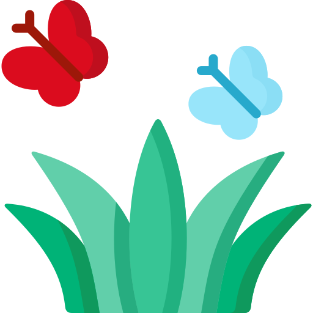

How to save water in the
Garden
?
In summer, water used outdoors can amount to 50 percent of the total used.

Grass
Stop watering your lawn. It's ok to let your grass go brown during dry spells - it will bounce back as soon as it rains again.
Hoses and sprinklers typically use about 1000 litres of water an hour. This is more than 12 baths.
If you have to use a sprinkler, try to use it in the early morning/late afternoon, this is when evaporation rates are lowest.
Garden Equipment
Pressure washers should be used sparingly or not at all. Look out for water-efficient models that are available.
Attaching a trigger nozzle on your hosepipe will halve the amount of water used and help direct the flow to the root of your plants.
Watering cans can significantly reduce the amount of water used (compared to sprinklers) whilst getting the desired amount to your plants.
Water butts are a brilliant method to catch a large amount of rainwater that falls each year - it's free water.
Plants
Feed your plants bath water, but not fruit and vegetable crops.
Use mulch and bark, it will help to reduce evaporation by up to 75%.
Drought-resistant bedding and perennial plants add a bit of diversity and resilience to plants.
Check the weather before you water. If there is rain in the forecast for the next day, don't water your garden the rain will.